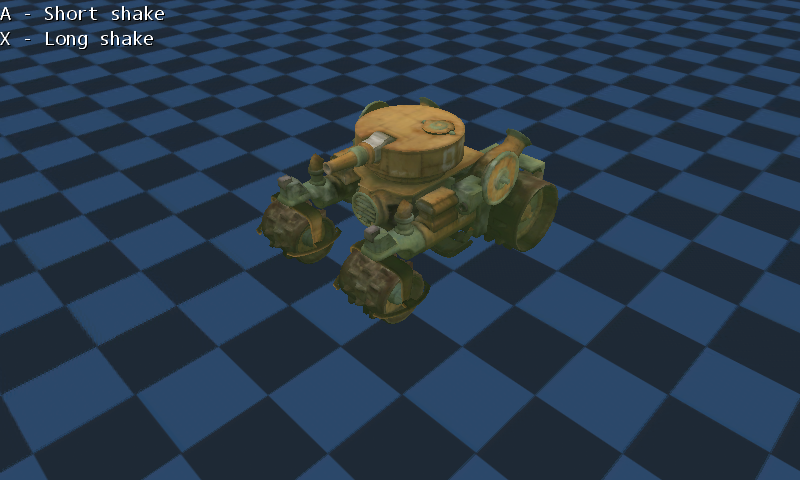

Camera Shake
Ported from Microsoft's XNA 4.0 Camera Shake sample.
Source for this sample on GitHub ↗

Play ▸Opens in a new tab. Press A or tap for a short shake; press X or double tap for a long shake.
About this sample
A textured tank and checkerboard ground show how camera offsets can shake a 3D scene. The shake fades nonlinearly and returns the view to its original position.
Controls
| Action | Keyboard | Touch | Gamepad |
|---|---|---|---|
| Short shake | A | Tap | A |
| Long shake | X | Double tap | X |
| Exit | Escape | — | Back |